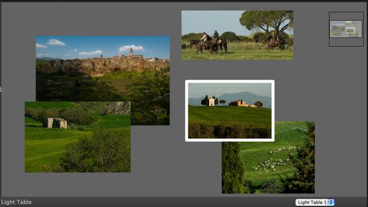
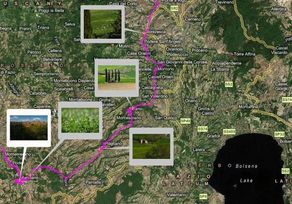
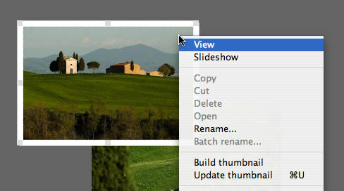
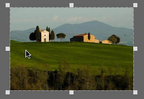

The Visual Library has been conceived mainly for building, handling and rendering graphs, including flow and UML diagrams (it has been originally developed for the NetBeans Mobility Pack, but from NetBeans 6.0 on it’s part of the NetBeans Platform APIs). I like to think of the Visual Library more generally, however, as an API for creating interactive “whiteboards” where you can place, move, and rearrange items visually.
From this perspective, the Visual Library reveals all its power, as modern UIs are each day more focused on the concept of modeling “real-life” objects that can be moved around. Thus it found its way into blueMarine, an open-source photo management application I created which is based on the NetBeans Platform (see my article in Issue 3 of NetBeans Magazine for more about this tool).
In blueMarine, the Visual Library is used to implement a virtual version of a photographer’s “Light Table” – a place where photos can be laid out and rearranged (see Figure 1). It’s also the basis for an advanced geotagging component (Figure 2). In this article I’ll describe the Light Table, which is the simpler of the two Visual Library-based components, but complex enough that we can show in practice many features of the API.

Figure 1. The Light Table
{kind=link}

Figure 2.
The Geotagging Component
{kind=link}
Though all the examples illustrated in this article refer to a NetBeans Platform application, you can use the Visual Library in plain Swing apps by adding a couple of JAR files to the classpath.
Basic concepts
Let’s first introduce some key concepts of the Visual Library. Widgets (the org.netbeans.api.visual.widget.Widget class and its descendants) represent a diagram’s nodes. A widget can consist of a simple drawing, a piece of text, an icon, or a group of these basic elements. It can also wrap a Swing component. You may need to subclass Widget for special purposes, but in most cases you’ll be fine with one of the provided widget classes such as ImageWidget and LabelWidget.
Connection widgets, in particular, represent arcs that connect pairs of other widgets. They are usually drawn as arrows (with some graphic variants for line caps). Also, their paths can be “routed” using different algorithms, for example to avoid clutter in diagrams.
Other essential elements are Actions and ActionFactories. You probably won’t be satisfied by just creating a diagram and staring at it, so there’s plenty of support for making diagrams dynamic and interactive. It’s possible to create, delete and select widgets, and have them change appearance when you hover over them. You can additionally drag, connect and disconnect widgets. The Visual Library provides Actions and corresponding factories to perform these tasks, and allows you to customize their behavior. Finally, a scene (org.netbeans.api.visual.widget.Scene) is the container for everything (in my initial analogy it represents the actual “whiteboard”).
In this article I assume the reader is quite confident with these basic concepts. There are already various tutorials available on the library’s website where you can learn the essentials. Here I present a more advanced, let’s say “creative”, use of the library.
Getting the code
You can download the full working code described in this article by using Subversion:
svn checkout \ http://bluemarine-incubator.dev.java.net/svn/
bluemarine-incubator/trunk/src/LightTable -r 232 \ --username guest
Revision 232 is the one matching the code listings in this article.
The Light Table
The Light Table lives inside a TopComponent (in a plain Swing application you would use a JFrame or a JPanel).
If you’re not familiar with the NetBeans Platform, a TopComponent is sort of a hybrid between a JFrame and a JPanel. It is normally docked, thus behaving as a JPanel, but can be undocked and float around like a JFrame. It is usually the container used for a user interface in NetBeans Platform applications.
A number of required objects are initialized in the LightTableTopComponent (see Listing 1):
| Listing 1. Basic objects for the Visual Library in LightTableTopComponent.java |
|
• scene – An instance of ObjectScene, a class that keeps associations between widgets and the objects that model them. This facility is quite useful for implementing the MVC pattern.
• view – A Swing JComponent that renders the objects in the scene. You obtain it by asking the scene object for its creation.
• mainLayer – The Visual Library usually organizes widgets in different layers. This can be handy especially for improving performance of graphs with connections. Our Light Table does not need connections so we’re fine with a single layer.
• satelliteView – This JComponent will render a “bird’s eye view” of the scene, useful if you’re going to create a large scene that extends beyond the screen size.
Listing 2 shows how the initialization is completed. You usually need to place the scene in a JScrollPane, to allow users to navigate it. We also use a JLayeredPane to render the satellite view above the scene in a corner. In the last line we enable zooming by creating a “zoom action” through the ActionFactory class and adding it to the scene.
| Listing 2. Initializing components in LightTableTopComponent |
|
Adding and removing objects
We also need to include a couple of methods for adding and removing photos in the Light Table; see Listing 3. In this code, when a new DataObject is added we perform the following steps (inside the internalAdd() method):
| Listing 3. Adding and removing objects from the Light Table |
|
1. Create the widget that represents the DataObject in the scene (the ThumbnailWidget, discussed below).
2. Assign its initial position (with some code needed to convert a Swing Point to a proper value in the Visual Library’s scene model coordinates).
3. Add the widget to the layer.
4. Add the widget and the DataObject to the scene (which binds them together).
5. Define the dynamic behavior of the widget by adding some actions. Many actions are created through ActionFactory, while others can be instantiated with specific methods of the scene object.
6. Finally, call scene.validate(). After one or more widgets are changed, the scene needs to be revalidated. The Visual Library usually does this automatically, but as we’re writing customized Swing code that performs a change we need to do this manually.
Before we go on, let me discuss some basic concepts about the way the NetBeans Platform implements the MVC pattern. In the Platform, the DataObject class is used to model a domain object, and an associated class – Node – is used to model its representation inside a view (a list, a tree, etc.). For example, Nodes contain a text label, an icon, and a list of associated actions which can be activated by a popup menu.
It’s a very good thing to have two distinct classes, since you can have multiple Nodes for each DataObject. This lets you create different representations of the same domain object. You usually subclass DataObject and add your application-specific logic. For example, blueMarine defines a PhotoDataObject class which contains code for reading and writing an image. However, you won’t see this class in the code in this article because I’m following a best practice of keeping models as general as possible, by working with plain DataObjects and delegating everything to the related Node classes. Thus, I could use the same code, e.g. for rendering movies (with a MovieDataObject) or other visual documents. Now let’s go back to the LightTableTopComponent.
Widget behavior
We want users to be able to select our widget, resize it by dragging its borders, and move it by dragging its contents. Also, the widget should change appearance when the mouse hovers over it, and come to the top of the stack when clicked. For movement, selection and hovering, adding predefined actions suffice. For resizing support though, the ActionFactory.createResizeAction() method won’t do: it lets you arbitrarily change the widget’s dimensions, but the photos need to have a fixed aspect ratio. In such cases you can customize widget actions with special strategies.
See an example of a strategy in Listing 4. The widget’s boundsSuggested() method is called by the Visual Library while we are dragging the widget; it’s passed both the original and current bounds. By returning a freshly computed Rectangle we can override the default settings. The code first gets the image’s aspect ratio and then computes the height from the new width or vice versa. This calculation takes into account the widget’s borders: if we draw a fixed-size border around the photo its thickness must not affect the aspect ratio calculation.
| Listing 4. Providing a custom ResizeStrategy for preserving aspect ratio |
|
In blueMarine, preview images are wrapped by a Thumbnail class. Similarly, in your applications you’ll usually have a specific class containing the data you want to render in the widget. The problem is how to bind a widget to a data model. While the simplest solution appears to be to create specific getter/setter methods in ThumbnailWidget, this would introduce specific dependencies and require explicit class casts (for example, as the method boundSuggested() is general, it deals with a Widget rather than with my ThumbnailWidget). Instead, I’ve used a Lookup, a very useful class from the NetBeans Platform (which is also available for use in plain Swing projects). It acts as a container of custom objects, which can be retrieved by specifying their class name. In Listing 4, you see that the thumbnail is retrieved by getLookup().lookup(Thumbnail.class). When we discuss the ThumbnailWidget class we’ll see how the Thumbnail object was made available.
Listing 5 shows the code for bringing the widget to the front. This is an example of how you can define new actions. I’ve extended the WidgetAction.Adapter class, which gets invoked by mouse and keyboard listeners, and overridden the relevant method.
| Listing 5. Customized action for bringing a widget to the front with a mouse click |
|
Actions are bound to the widget by defining a “pipeline” to which mouse and keyboard events are delivered. Sometimes an event is propagated through the whole pipeline; in other cases a certain action consumes it definitely. The propagation of events is controlled by returning some specific flags such as State.CONSUMED (which stops the propagation).
The ThumbnailWidget
Now it’s time to take a look at the widget’s code. While the Visual Library already provides an ImageWidget class which renders a generic Image, we need something more complex, for the following reasons:
• First and most important from a performance perspective, reading an image from a file needs some time, and a Light Table can contain tens of images. For instance, twenty images requiring 50ms each would lead to a full second of loading time. We can't spend all this inside the event thread, or the Light Table would be sluggish. blueMarine deals with this by means of a ThumbnailRenderer class that manages image loading on demand and renders placeholders while images
are not ready.
• Also, blueMarine will soon support image manipulation, and I’ll need to update all representations in real time when such changes happen (e.g. by painting specific decorations when a thumbnail is not up to date). This is solved using the Node class’s capability of firing events that notify updates – and then ThumbnailRenderer will do all the required work.
• Lastly, it’s necessary to implement a context menu for the widgets, which must be coherent with the rest of the application. Nodes again provide support for this. (See the result in Figure 3).

Figure 3. Context menu for a widget
Considering all this, it seems obvious that we need to implement a special widget class that delegates the implementation of context menus to the Node class and the rendering operations to ThumbnailRenderer. Let’s first concentrate on the widget’s creation.
In the code shown in Listing 6, I set some fields to refer to the Node and Thumbnail; then I adjust the user-specified size to comply with the photo’s aspect ratio. I’ve previously mentioned the role of the Lookup class in linking a widget to its model, and shown how to extract the model from a properly prepared Lookup instance. Now, in Listing 6, you can see how the Lookup instance is prepared. A ProxyLookup is a NetBeans Platform class that “merges” two existing instances of Lookup – the one coming from the Node (required for the context menus to work) and a new one that contains both the Node and the Thumbnail.
| Listing 6. The ThumbnailWidget |
|
To paint a custom widget, we add code to the paintWidget() method (see Listing 7). The obvious part here is that the image rendering is delegated to my thumbnailRenderer.paint() method. Less trivial is managing the scaling (remember, a scene can be zoomed in and out). This is done by controlling the scale of Graphics2D.
| Listing 7. Rendering the custom widget |
|
Listening for node changes
Changes in the representation of photos are handled by firing events on the relevant Node. So that our ThumbnailWidget updates correctly, we need to setup a NodeListener, which you can attach and detach in the notifyAdded() and notifyRemoved() methods (see Listing 8). These are called when the widget is added to or removed from a scene (you can think of them as a kind of life-cycle control).
| Listing 8. Listening for changes |
|
Now take a look at the doRepaint() method in Listing 9. Notice that it must cope with the usual Swing threading issues, since Node events can be fired by an arbitrary thread. Also, after a widget has been changed (in this case by calling its repaint() method), the scene must be validated. Otherwise you won’t see any updates.
| Listing 9. Forcing the repaint of a widget |
|
Handling borders
The cream on the cake is adding visual cues to the widgets. We want to render different borders around the photos according to their selection state: no border for unselected widgets, a white border if selected, and a special “resize border” when you hover over the photo (see Figure 4).

Figure 4. Visual cues for photos in the Light Table (normal, selected and resizing)
First, we need to override the notifyStateChanged() method, which is called whenever the widget changes state (see Listing 10). It receives two parameters representing the old and the new state. We use the isSelected() and isHovered() methods to choose the proper border.
There’s a subtle problem here: borders can vary in thickness. By default the Visual Library preserves the overall size of a widget, so setting a different border thickness would change the space reserved for the photo. To preserve the size of the photos, we just need to compute the change in the border and adjust the widget size (also in Listing 10).
| Listing 10. Reacting on widget state changes |
|
Some final words about borders. The Border class for Widget is different from the usual Swing Border classes (see Listing 11). Widget borders are more complex. Also, there’s a similar BorderFactory which provides some preset borders useful in most cases. In the Light Table, the default borders are just
rectangles with rounded corners that can be created with BorderFactory.createRoundedBorder(). You can create several common borders similarly: for instance, BorderFactory.createResizeBorder() gives you a standard “resize border” that is painted as a dashed line with “control handles”. In some special cases, we can write code to define customized borders. For instance, Listing 12 shows how to implement a “compound border” which sticks two borders together.
| Listing 11. Widget Borders |
|
| Listing 12. Widget Borders |
|
Conclusion
In this article, we’ve seen many features of the Visual Library and a “creative use” for it that goes a little outside its most common scope. This provides us some examples for understanding how the library can be extended to comply with your needs. We’ve only scratched the surface, however. For instance, we didn’t explore connection widgets, which are another powerful feature. But that would be material for another article!
| Links |
The author’s blogs http://wiki.netbeans.org/wiki/view/Ruby Wiki for Ruby support in NetBeans Homepage for the Visual Library http://bluemarine.tidalwave.it/ The blueMarine Project |